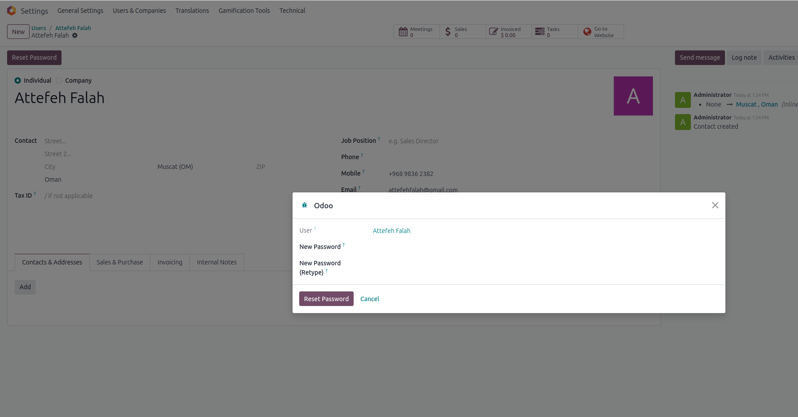

This module allows administrators to securely reset passwords for user accounts, including Portal users and Internal Users from their partner's form.
Below is a preview of the password reset button and wizard in the user form:
This module adds a button to the res.partner form view. When clicked, it opens a wizard to ask for new password. By confirming it will update related user to that partner's password.
Developed by Attefeh Falah — for support or customization, contact attefehfalah@gmail.com.